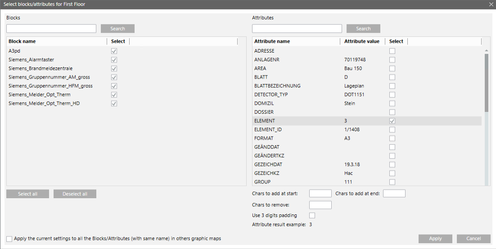

Select the Object Blocks and Identification Attributes
- You are on page 2 of 5: Select Maps, Layers and Blocks.
- You want to import the CAD blocks and use one of their attributes to identify objects in the map and import them as symbols. You can skip this section if you want to import the CAD drawings as background only.
- Click Select blocks/attributes of the first selection.
- The Select blocks/attributes for [map name] dialog box displays.
- On the left-hand side, in the Blocks list, select the check box next to the blocks you want to take into account. Enter the first letters of a block name and click Search to filter the list.
- On the right-hand side, in the Attributes, select the check box next to the attribute that contains the information about the objects to identify and import as symbols. Enter the first letters of an attribute name and click Search to filter the list.
Your goal is to find a string that can match the value of one of the following object properties in Desigo CC: - Description
- Name
- Element ID
NOTE 1: You can select more than one attribute on different blocks. Only the first attribute found in the selected blocks will be considered. Blocks that do not contain any of the selected attributes are ignored.
NOTE 2: See an application example in CAD Blocks and Fire Objects Matching Example. - While the Element ID typically requires a perfect match with the CAD block attribute, for the description or name match, you can often use the fields located below the attributes list to define a rule that adds or removes characters from the original attribute string. Here you can:
- Use Chars to add at start to add leading characters to the string.
- Use Chars to add at end to add trailing characters to the string.
- Use Chars to remove to remove characters.
NOTE 1: You can use the wildcard characters “*” (for strings) and “?” (for single characters). For example, if you have an attribute string such asM#3113/L#07that you want to match with Name:<anytext>D3113/07<anytext>(in general *D<detector/line>*), you can:
- Add*Dat the beginning
- Add*at the end
- RemoveM#LNOTE 2: Take note of the final settings for future reference. Note that they are reset if you start a new import and specify a different folder in the procedure 1 above. - Select the Use 3-digit padding check box to normalize applicable numeric structures to a 3-digit numbers separated by a dash character, a common standard in fire control units. For example, 14.02.009 is interpreted as 014-002-009. This option has no effect on non-numeric or unstructured values.
- Check the output in Attribute result example and repeat the steps above as necessary to get the selected attribute to match description or name of the objects.
- At the bottom of the dialog box, you can select the check box to apply the setting to the same blocks and attributes of the selected maps.
- Click Apply.
- If necessary, repeat this procedure from step 1 for the other maps to import.
- Click
 .
.
NOTE: If you are not sure whether the attribute will match the description or name properly, do not immediately proceed to the next page. Instead, note down the string in Attribute result example and use System Browser to search for the corresponding object. Make sure it can be identified unambiguously (refer to section 5 below). During the import, the tool will perform the same search function to link the graphical symbols to the Desigo CC objects.
